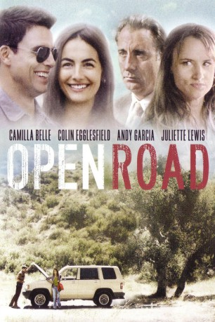

#7810 Open Road - Wohin wird der Weg sie führen?
 
 IMDB-Wertung: 5.5 / 10
IMDB-Wertung: 5.5 / 10  Metascore: 0
Metascore: 0 
Die junge Brasilianerin Angie (Camilla Belle) ist eine ambitionierte Künstlerin. Sie lässt ihr altes Leben in Brasilien hinter sich und begibt sich auf eine Reise um sich selbst zu finden und ihrer Vergangenheit zu entfliehen. Ihr Trip führt sie quer durch die Vereinigten Staaten, wo sie mit wenig Geld ziellos durchs Land streift, egal ob zu Fuß oder motorisiert. Ihren Schlafplatz schlägt sie dabei oft mit Zelt irgendwo in der Wildnis auf oder schläft im Auto. Zwischendurch hält sie sich mit Gelegenheitsjobs über Wasser. Als sie nach einer ungemütlichen Nacht im Auto auf den netten Polizisten David (Colin Egglesfield) trifft, der ihr vorschlägt, ein paar Tage bei ihm zu wohnen, bietet sich ihr Möglichkeit für eine positive Wende. Die beiden kommen sich näher, doch Angies Vergangenheit scheint sie schließlich doch noch einzuholen.
Jahr: 2013
Dauer: 84 Minuten
FSK: 12
Land: Brasilien Studio: Lighthouse Home EntertainmentTonspuren: DTS - ,
Untertitel: Deutsch,
Auflösung: 1080p (1920x816) Größe: 4669 MB
Genre: Action, Thriller, Drama
Regisseur: Marcio Garcia
Drehbuch: Julia Camara
Soundtrack: Ruben Feffer
Darsteller:
 Camilla Belle als Angie
Camilla Belle als Angie Andy Garcia als Chuck
Andy Garcia als Chuck Colin Egglesfield als David
Colin Egglesfield als David Juliette Lewis als Jill
Juliette Lewis als Jill John Savage als Carl
John Savage als Carl- Kristi Clainos als Louise
- Emily Nelson als Diner Waitress
- Craig Gellis als Ronny Rapist #1
- Anya Isabel Andrews als Olivia (uncredited)
- Chrissy Calhoun als Antique Store Clerk (uncredited)
- Jennifer Cambra als Jennifer (uncredited)
- Michael Cardelle als Nick (uncredited)
- Michael King als Highway Patrol Officer (uncredited)
- Ingrid Rogers als Georgia (uncredited)
- Van White als (uncredited)
- Christiane Torloni als Glória
- Carol Castro als Sônia
- Rick L. Dean als Diner Patron (uncredited)
- Paul Vinson als Kevin Rapist #2 (uncredited)
Datei: X:\2013(N-Z)\Open Road - Wohin wird der Weg sie führen (2013, FSK12, 1920x816).mkv seit 20.12.2017
Festplatte: HD 2013(I-Z)-2014(A-Z)
 Es gibt insgesamt 133 Filme in der Gruppe '2013(N-Z)'
Es gibt insgesamt 133 Filme in der Gruppe '2013(N-Z)'